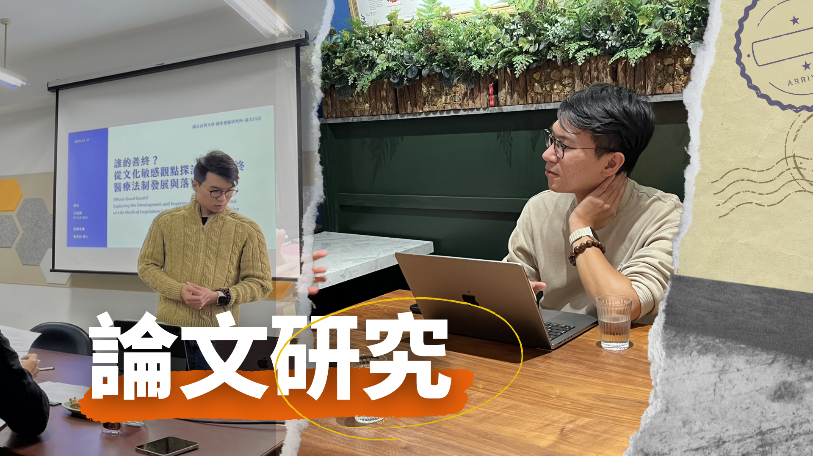
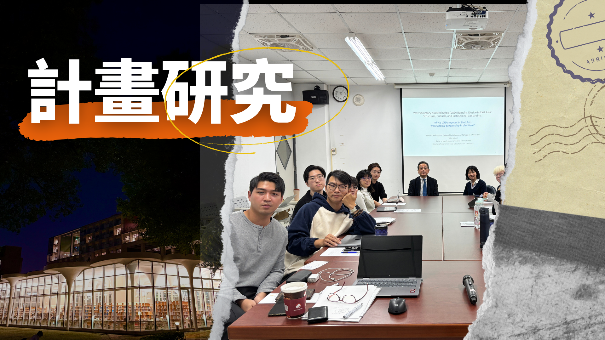
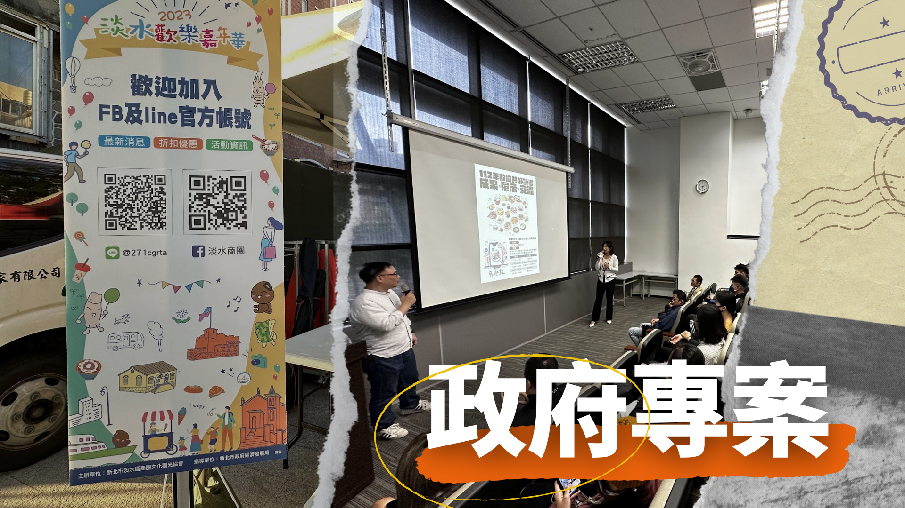
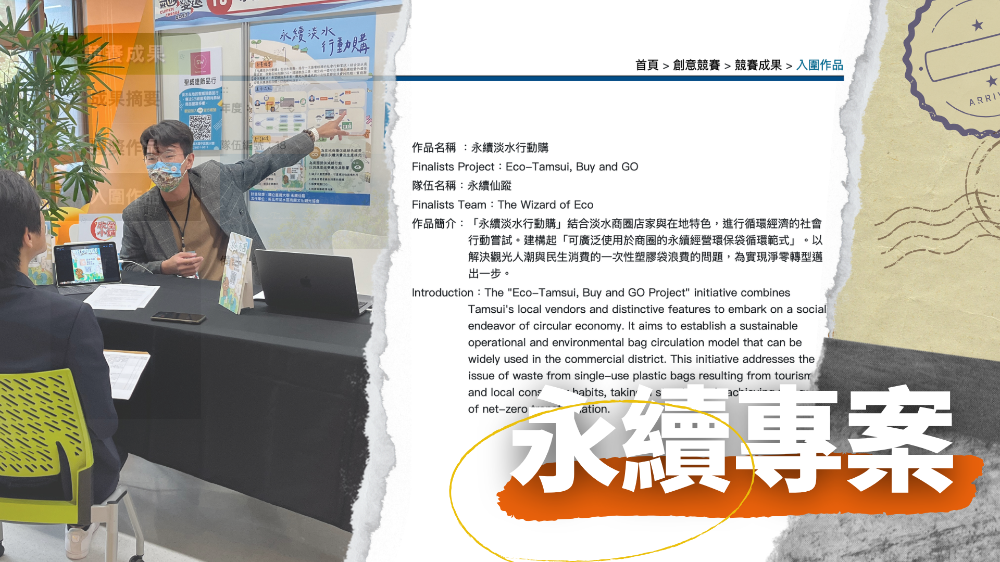

Yi-Hsiu Lu
精選專案 Featured

碩士論文
採法社會學方法分析 1998–2024 年善終法制演進，訪談 12 位跨領域前線行動者

學術計畫
運用 Qualtrics 設計實驗問卷，SPSS 分析 4,500 份樣本，探討預立醫療決定影響因子

產業輔導
執行超過 600 萬元政府標案，輔導百餘農友及商圈店家數位轉型

永續發展
設計循環經濟模式、整合 ISO 14064-1 碳盤查與永續教育模組
關於我 About
具科技治理與政策法規之跨領域研究訓練，擅長跨國比較、主題分析、深度訪談及利害關係人梳理。 同時具備中央及地方政府標案執行經驗，能在多方協作與動態調整的專案環境中穩定推進工作。